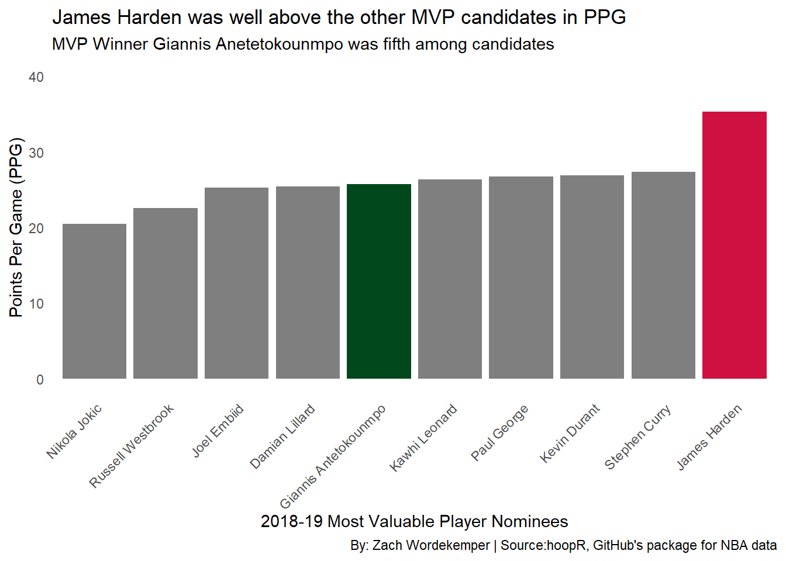

Code
library(tidyverse)
library(dplyr)
library(ggplot2)
library(ggbeeswarm)
library(ggrepel)
library(scales)
library(waffle)
library(hoopR)Zach Wordekemper
December 9, 2024
The NBA Most Valuable Player (MVP) Award is given each year to the best performing player of the regular season. In 2018, James Harden won the award averaging 30.8 points per game, 5.4 rebounds per game, and 8.8 assists per game. In 2019, he was second in the MVP voting after having one of the most impressive offensive statistical seasons of all time. One of the most important factors in MVP voting is points per game (PPG) and team success. Let’s see how James Harden’s team, the Houston Rockets, were scoring compared to the rest of the league.
player_stats <- season_data |>
group_by(athlete_display_name) |>
summarize(
games_played = n(),
total_points = sum(points, na.rm = TRUE),
total_assists = sum(assists, na.rm = TRUE),
total_rebounds = sum(rebounds, na.rm = TRUE),
points_per_game = mean(points, na.rm = TRUE),
assists_per_game = mean(assists, na.rm = TRUE),
rebounds_per_game = mean(rebounds, na.rm = TRUE)
)TeamPPG <- season_data |>
filter(!team_name %in% c("Team LeBron", "Team Giannis", "World", "USA")) |>
group_by(team_name, game_id) |>
summarize(points_per_game = sum(points, na.rm = TRUE), .groups = "drop") |>
group_by(team_name) |>
summarize(
totalgames = n(),
totalpoints = sum(points_per_game, na.rm = TRUE)
) |>
mutate(PPG = totalpoints / totalgames)ggplot(TeamPPG, aes(x = PPG, y = reorder(team_name, PPG))) +
geom_beeswarm(aes(color = ifelse(team_name == "Rockets", "red", "grey")), size = 3) +
scale_color_identity() +
labs(
title = "Houston Rockets were 11th in Points Per Game",
subtitle = "The 2019 Champions, Toronto, were 12th",
x = "Points Per Game (PPG)",
y = "Team",
caption = "By: Zach Wordekemper | Source:hoopR, GitHub's package for NBA data"
) +
theme_minimal() +
theme(legend.position = "none")mvp_candidates <- c("Giannis Antetokounmpo", "James Harden", "Paul George",
"Nikola Jokic", "Stephen Curry", "Damian Lillard",
"Joel Embiid", "Kevin Durant", "Kawhi Leonard", "Russell Westbrook")
player_stats_2019 <- season_data |>
filter(athlete_display_name %in% mvp_candidates) |>
filter(season == "2019") |>
group_by(athlete_display_name) |>
summarize(
games_played = n(),
total_points = sum(points, na.rm = TRUE),
PPG = total_points / games_played
)The Toronto Raptors were the NBA Champions of the 2018-19 season. They were led by Kawhi Leonard, who finished 9th in MVP voting. So, maybe team success is not as big of a factor in MVP voting. Nonetheless, individual player scoring is still incredibly important when it comes to the MVP. Let’s see how James Harden compared to the other MVP nominees.
ggplot(player_stats_2019, aes(x = reorder(athlete_display_name, PPG), y = PPG, fill = athlete_display_name)) +
geom_bar(stat = "identity", show.legend = FALSE) +
scale_fill_manual(values = c(
"James Harden" = "#CE1141",
"Giannis Antetokounmpo" = "#00471B",
"default" = "grey"
)) +
labs(
title = "James Harden was well above the other MVP candidates in PPG",
subtitle = "MVP Winner Giannis Anetetokounmpo was fifth among candidates",
x = "2018-19 Most Valuable Player Nominees",
y = "Points Per Game (PPG)",
caption = "By: Zach Wordekemper | Source:hoopR, GitHub's package for NBA data"
) +
expand_limits(y = c(0, 40)) +
theme_minimal() +
theme(
axis.text.x = element_text(angle = 45, hjust = 1),
panel.grid.major = element_blank(),
panel.grid.minor = element_blank()
)
player_stats_mvp <- season_data |>
filter(athlete_display_name %in% mvp_candidates) |>
group_by(athlete_display_name, game_date) |>
summarize(daily_points = sum(points, na.rm = TRUE), .groups = "drop") |>
group_by(athlete_display_name) |>
mutate(cumulative_PPG = cumsum(daily_points) / cumsum(!is.na(daily_points)))Clearly, James Harden was scoring a lot more than anyone else. It got to the point where he was being guarded from behind, as teams had no answer for how to stop the prolific scorer. On December 13, 2018, he recorded a 50-point triple-double. Including that game, he averaged 40.8 points per game for the rest of December. Let’s see how his scoring looked over the course of the 2018-19 season.
ggplot(player_stats_mvp_filtered, aes(x = game_date, y = cumulative_PPG, color = athlete_display_name)) +
geom_line(size = 1.2) +
scale_color_manual(
name = "Player",
values = c(
"James Harden" = "#CE1141",
"Giannis Antetokounmpo" = "#00471B",
"default" = "grey"
)
) +
labs(
title = "James Harden was a tier above the rest",
subtitle = "Harden had 3 50-point and 8 40-point games in January",
x = "Date",
y = "Points Per Game (PPG)",
caption = "By: Zach Wordekemper | Source:hoopR, GitHub's package for NBA data"
) +
scale_x_date(
breaks = "1 month",
labels = date_format("%b %Y"),
limits = c(min(player_stats_mvp_filtered$game_date), max(player_stats_mvp_filtered$game_date))
) +
scale_y_continuous(
limits = c(15, 40)
) +
theme_minimal() +
theme(
axis.text.x = element_text(angle = 45, hjust = 1),
panel.grid.major = element_blank(),
panel.grid.minor = element_blank()
)Clearly, James Harden’s scoring ability was in a league of its own during the 2018-19 season. There are other factors that go into MVP voting, and perhaps he was experiencing some voter fatigue after winning MVP the previous season. Nonetheless, these visualizations prove that James Harden was snubbed from winning MVP and should have won back-to-back MVP awards.